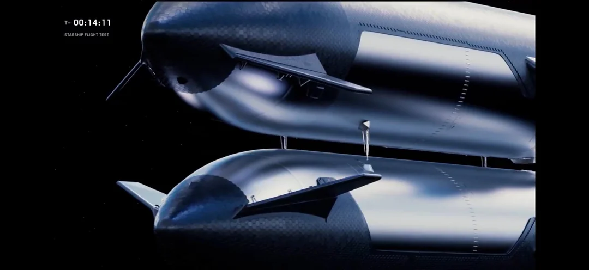
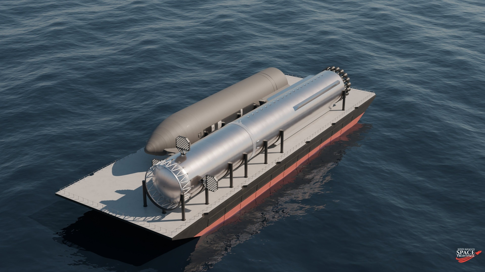
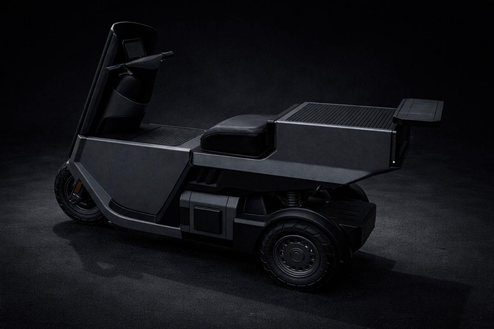

Demand for orbital AI data centers is rising fast, but launch capacity is nowhere close to keeping up. Right now, Falcon from SpaceX is the only launch vehicle that reliably works at scale, and it is effectively booked out for the year. Across the industry, launch availability for 2026 is already extremely constrained, and aside from SpaceX, no new platform appears likely to meaningfully serve startups by early 2027.
The nearest competitors — Rocket Lab and Blue Origin — still face cost structures too high to solve the problem at scale. Once government demand is added on top, the market could require thousands of launches per month, and the industry is simply not equipped to deliver that.

The 2027 Mars window is at risk.
For deep space missions, Starship's current pace is too slow. SpaceX itself is close to risking the early-2027 Mars window — orbital refueling tests, essential for Mars missions, appear to be running 6 to 8 months behind schedule. If that window is missed, the next opportunity will not arrive until 2029.
One thing is clear: this has to change.

Rockets have no manufacturing playbook.
Starship vehicles must be transported to Cape Canaveral on an enormous dedicated transport system. Flap systems need specialized towers and wire rigs built just to test a single component. The chopstick catching tower — central to rapid reusability — had to be designed and built from nothing.
These are foundational decisions that take significant time to execute. Unlike smartphones, rocket development has no standardized manufacturing path. That has to change.
This challenge will become even more critical in the future. The industry will need not just launch vehicles, but far more complex space systems. Starship alone is not enough for long-duration human space travel. We will need vehicles like space cyclers — capable of generating artificial gravity — spacecraft too large to launch from Earth, that must be assembled in orbit, much like the ISS.
The industry needs a fundamental shift. We must rethink not just how rockets are built, but how the entire launch infrastructure is designed and constructed. The answer is physical AI — systems not just good at reasoning, but at building real-world infrastructure. Humanoid robots, logistics robots, and AI will be the bootstrapping layer for that future.

That is the problem
we are solving.
An autonomous factory for space infrastructure, where humanoids, logistics vehicles, and heavy machines all operate under a shared intelligence layer — around the clock, at orders-of-magnitude greater efficiency.
Our first milestone: build, entirely with robots, all the infrastructure required to launch a small rocket.
It will be built by autonomous systems.
We are building the systems that can turn factory construction, rocket infrastructure, and launch preparation into an always-on autonomous capability.
And we're starting now.